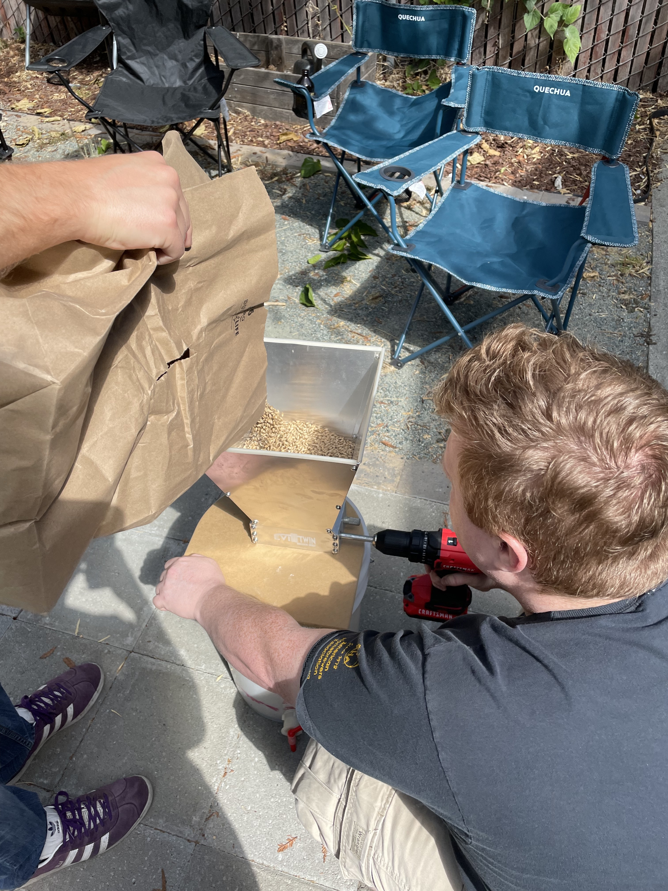
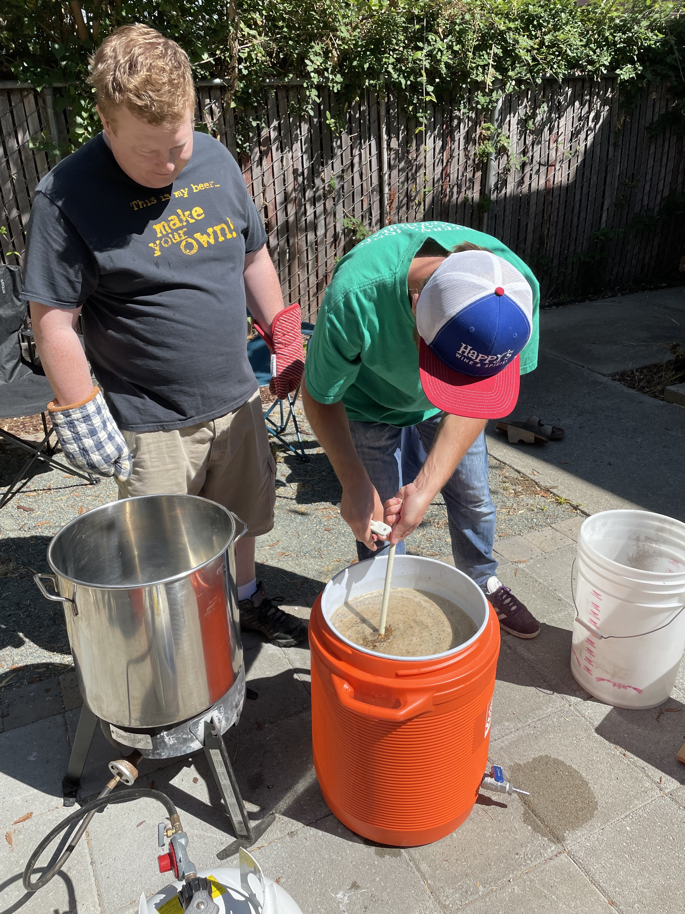
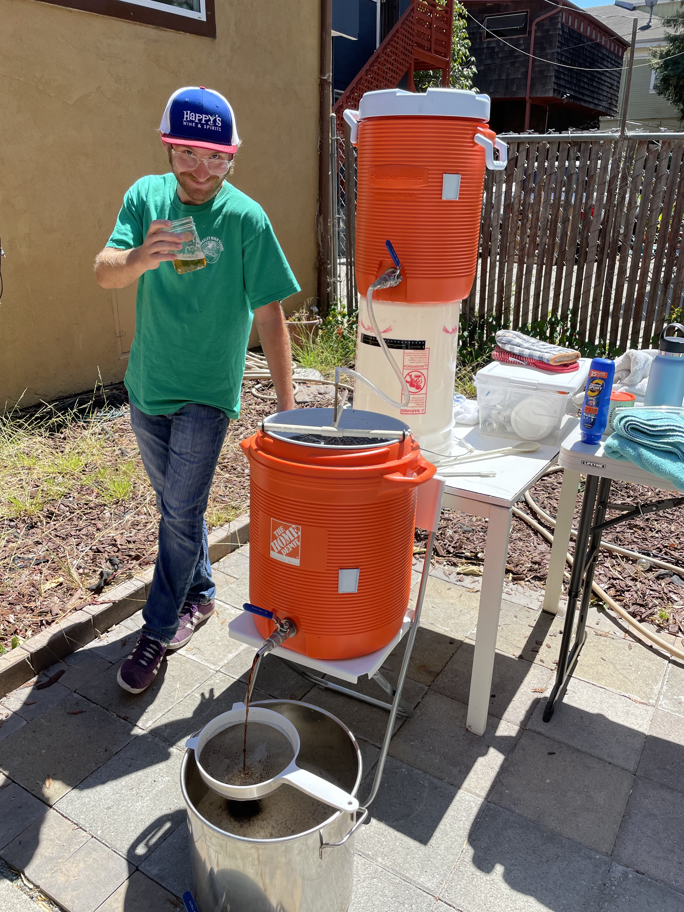

🍺 Sláinte! 🍺
We are back! We took quite a hiatus from brewing, but this past weekend we got together and put on our best brewer’s caps to make one of our favorites - Steve’s “You’re killing me smalls” Stout. My friend Steve has been honing in this recipe for over 10 years, and it is a phenomenal beer.
We use the all-grain method of brewing, as opposed to using an extract. It is a little extra work, but allows more control over the final product, and the process itself is quite fun.
The first step on brew day is to grind up all of our base grain and specialty grain. For this recipe, we use roughly 16 pounds of 2-row malt as our base, and 3 pounds of specialty grain. For a stout, the specialty grain is roasted to give those characteristic flavors and aromas of a dark beer.

All of the crushed malt then gets steeped in hot water at about 155 F for one hour - this is called the “mash”. This hot-water bath hydrates the malt, releases natural enzymes, and those enzymes can then break down the starches into sugar. This is an important step - the sugar produced here is what ultimately gets fermented to alcohol by the yeast later down the line - mashing at the correct temperature is important for good conversion and a good beer.

After the mash, we sparge. Sparging is the process by which we we separate all of those new fermentable sugars from the grain-mash. The contraption for this is neat:

The top bucket is filled with water at ~170 F, the middle bucket is our mash, and the bottom 7 gallon kettle is our collection vessel. The process is simple - the top bucket very gentle sprinkles hot water on the mash. This hot water rinses the grain bed and helps push out all of the sugar water - which gets collected in the stainless steel kettle.
We then boil all the liquid in the kettle for an hour, and add hops at different times during the boil. Depending on when you add hops (and what kind) you either contribute bitterness or hop-flavor. Roughly speaking, hops that go in early during the boil contribute bitterness to the beer, and hops added in later will contribute flavor.
After the boil and hop addition, we recirculate the beer to reduce the temperature near ambient levels. At this point, we add yeast, and we have